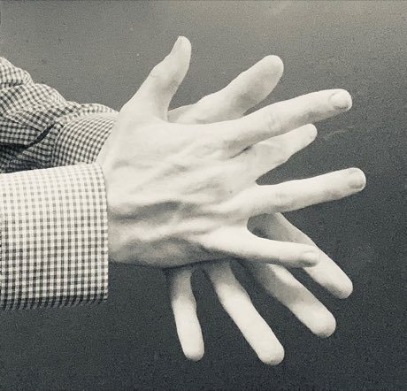

Home / Age of Contact and Craft / Mediterranean
Playable heritage gameFlamenco palmas
Also known as Palmas y compas · rhythmic clapping
Palmas are the rhythmic hand-claps of flamenco. Two kinds are used: palmas sordas, with cupped hands, give a hollow, soft sound; palmas claras, with the fingers against the palm, give a sharp one. Pitos are finger snaps. Together they hold the compas, the twelve-beat cycle on which the dancing and singing rest.


How to play
- A wheel of twelve beats turns above the pads; the accents at 3, 6, 8, 10 and 12 are marked in gold.
- Four pads are lit: Sorda (soft, cupped), Clara (sharp), Pitos (snaps) and Golpe (a slap on the thigh). A ring closes on a pad when it is time.
- Clara on the accents, Sorda on the beats between.
Rules at a glance
- A stroke on the beat is perfect, a near one is good, and extra strokes cost points.
- Each pattern is played twice through.
- Patterns are simplified teaching figures in the style of the tradition, not transcriptions.
About the tradition
Learning to keep the compas with palmas is the first step of every flamenco musician. The accents fall in a pattern that is felt rather than counted.
Origins
Usually placed in the era of Age of Contact and Craft (about 1500 to 1800), although its exact origins are uncertain, within the cultural world of Mediterranean.
Credits
- Photo: TheEaterofCorn, CC BY-SA 4.0, source on Wikimedia Commons
- Text: CC BY-SA 4.0, World Heritage Games.
Sources

Get the app
Flamenco palmas is one of 12 folk dance rhythms in the Folk Dance of the World app for Android. Submitted to Google Play; in review. Store links appear here the day it goes live. One app, many traditions, no account needed.
More games to play

Tuvan Throat Singing
Mongolia +1 · Archery, throwing and target gamesPlay preview · in the Wind & Voice of the World app


Celtic knot weave
Ireland +1 · Crafts and makingPlay preview · in the Textile Crafts of the World app
More from Spain


Bottle Dance
Paraguay +1 · Dances
Cantabrian palm bowling
Spain · Street and playground games

Dry Stone Wall Builder
Croatia +4 · Crafts and making